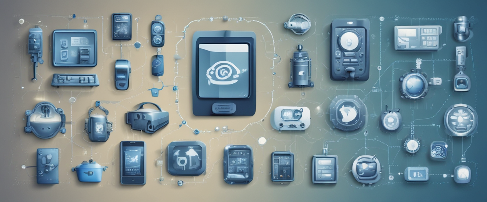

Processo de desenvolvimento de sistema
S6. Técnicas de eseliação de requisitos
Introdução às técnicas de elicitação de requisitos: princípios e práticas: A elicitação de requisitos é uma das fases mais críticas do desenvolvimento de software, determinando o que será necessário para o projeto ser bem-sucedido. Uma compreensão sólida dos princípios de elicitação garante que os requisitos coletados sejam completos, claros e validados.
O domínio de técnicas avançadas de elicitação de requisitos permite a identificação de necessidades e expectativas detalhadas dos usuários e de outras partes interessadas. Isso assegura que o produto final atenda às demandas do mercado e dos negócios.
A eficácia na comunicação e na colaboração durante a elicitação de requisitos é fundamental para alinhar as expectativas e entender profundamente as necessidades do projeto, minimizando riscos e mal-entendidos.
S7. Teste funcionais: Conceitos e metodologia
Teste funcionais:conceitos e metodologia:Testes funcionais são essenciais para verificar se um sistema de software opera conforme as especificações definidas. Esses testes ajudam a identificar discrepâncias precocemente, garantindo que o produto final atenda às expectativas dos usuários e às demandas do negócio
A escolha de uma metodologia de teste apropriada pode impactar significativamente a eficácia e eficiência do processo de teste. Compreender as metodologias disponíveis permite a seleção e adaptação da abordagem de teste mais adequada ao contexto do projeto.
As melhores práticas em testes funcionais orientam os testadores a conduzirem avaliações de forma sistemática e eficaz, reduzindo erros e aumentando a confiança na qualidade do software. Casos de uso reais ajudam a ilustrar os desafios e soluções.
S8.Modelagem de dados racional: entidsades, atributos e relacionamento
Modelagem de dados racional:A modelagem de dados relacional é a espinha dorsal de quase todos os sistemas de banco de dados empresariais. Entender sua estrutura é vital para criar bancos de dados eficientes e que atendam corretamente às necessidades de informação das organizações.
O entendimento correto de relacionamentos é essencial para representar com precisão como as entidades interagem umas com as outras em um sistema de banco de dados, permitindo consultas complexas e a integridade dos dados.
As técnicas avançadas em modelagem relacional de dados abrem caminho para bancos de dados mais robustos e escaláveis. Manter-se atualizado com as tendências modernas é crucial para projetar bancos de dados que possam evoluir com as tecnologias emergentes e as crescentes demandas dos negócios.
Redes de computadores
S6. Camada física: Transmissão de dados e meios de comunicação
Camada física: Transmissão de dados e meios de comunicação: A camada física define as características mecânicas, elétricas, funcionais e os procedimentos para ativar, manter e desativar conexões físicas para a transmissão de bits. Nessa camada estão definidos os padrões mecânicos, como conectores, painéis de conexão, cabos de conexão, funcionais, como DCE ou DTE, elétricos, como voltagens, codificação de linha, pulso elétrico e procedimentos para acesso a esse meio físico.
Simplex é um método de transmissão unidirecional, no qual os dados fluem em apenas uma direção, ou seja, do emissor para o receptor, em uma ligação de comunicação. Um ótimo exemplo do simplex é a televisão.
Temos 3 tipos distintos de transmissão: simplex, half-duplex e full duplex; • No seminário, devem ser apresentados, principalmente, mais exemplos sobre os tipos de transmissão e como são aplicados no dia a dia.
S7. Topologia em anel
Topologia em anel: “A topologia em anel, também conhecida como topologia ativa, conecta uma rede de computadores com um formato de anel.” Imagine uma série de dispositivos (como computadores ou outros dispositivos de rede) conectados de maneira circular, formando um "anel". Cada dispositivo está conectado ao seu vizinho mais próximo, e o último está conectado ao primeiro, criando assim uma configuração em forma de anel.
Dentro da topologia de rede em anel, existem duas possibilidades de funcionamento e transmissão de dados com base na forma e no sentido da transmissão dos dados. Esses dois tipos são: Tipos de topologia em anel Unidirecional Bidirecional.
A topologia em estrela apresenta uma estrutura simples com um HUB, um switch ou um roteador como ponto central de distribuição, conectando várias máquinas e dispositivos a ele. A topologia em barramento utiliza um barramento central (coaxial) para conectar os computadores, sendo uma configuração amplamente empregada no passado. A topologia em anel (ou ativa) conecta computadores em um formato circular, com cada estação ligada a duas outras. Ideal para organizações com tráfego intenso.
S8. Meios de Transmissão Guiados
Meios de transmissão guiados: Guias de fibra óptica: O que são? Consistem em filamentos flexíveis, como fibras de vidro ou plástico, compostos por um núcleo transparente de alto índice de refração cercado por camadas plásticas com índices mais baixos. Essas fibras, extremamente finas, exploram a reflexão interna total da luz, possibilitando sua utilização em comunicações e transmissão de dados.
Se a fibra óptica é tão poderosa, por que não a utilizamos no lugar do par trançado? 1 Pesquise: por que ela não é utilizada nas redes internas no lugar do par trançado? 2 Tente descobrir possíveis limitações em sua aplicação. 3 Visualize outras possíveis explicações para isso não ocorrer, como a parte financeira, talvez.
Vantagens dos cabos de fibra óptica: Velocidade de transmissão: os cabos de fibra óptica, que são usados no mundo, são capaz de transmitir 40 Gbit/s (Gigabits por segundo – 109 bits/s), mas já existem tecnologias que são capazes de transferir até 1 Pbit/s (Petabit por segundo – 1015 bits/s); Resistência a interferências eletromagnéticas: os cabos de fibra óptica são feitos de materiais dielétricos, por isso, a propagação da luz no interior deles não sofre interferência por ondas eletromagnéticas; Baixa atenuação de sinal: diferentemente dos cabos condutores, os cabos de fibras ópticas conseguem transmitir informações com um mínimo de perdas: cerca de 0,2 dB/km (0,2 decibels – unidade de intensidade da energia carregada pela onda).